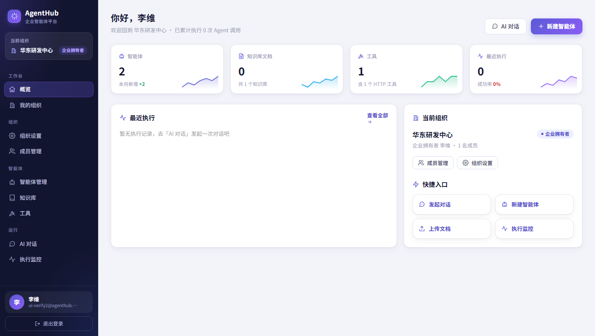
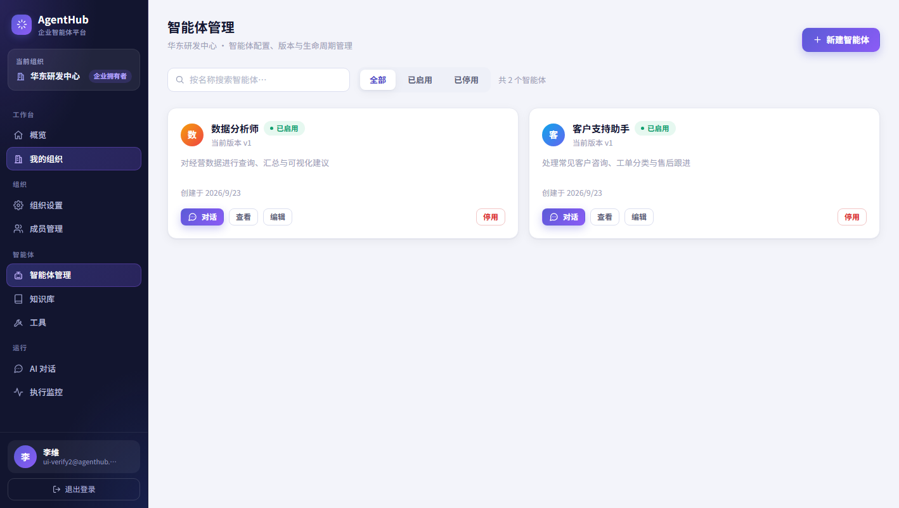
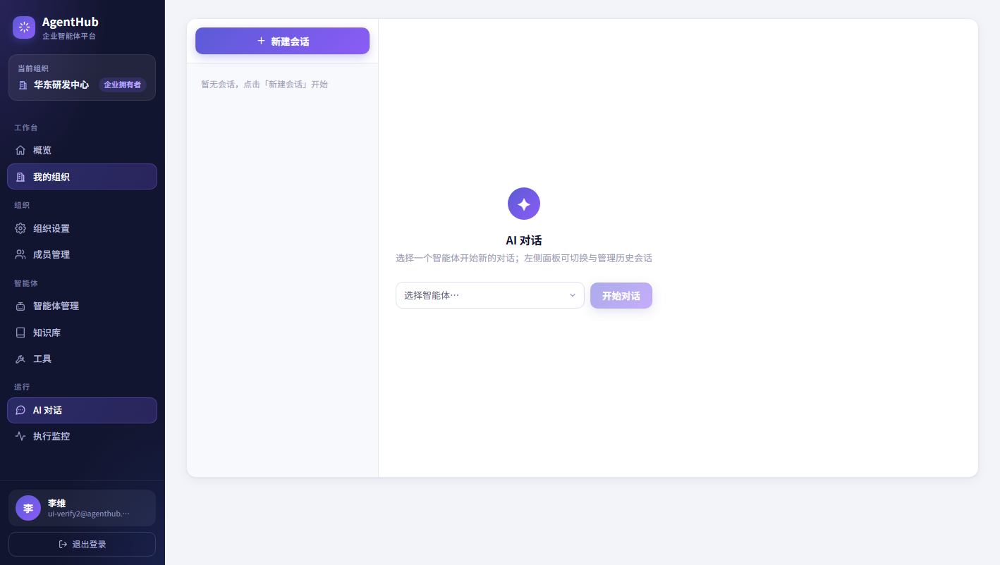
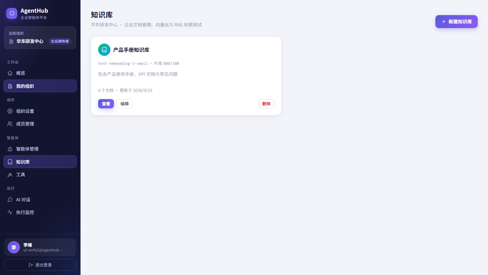
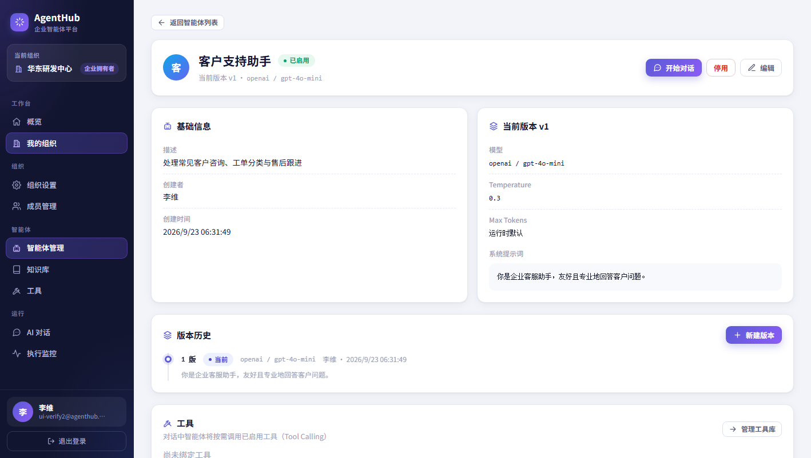
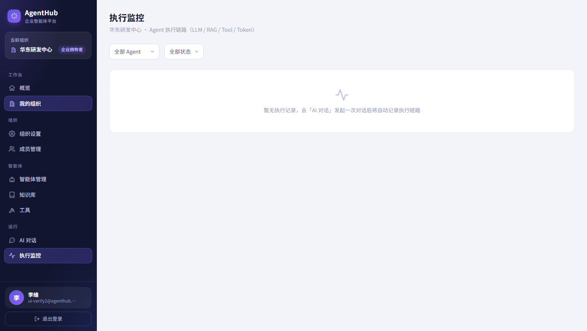
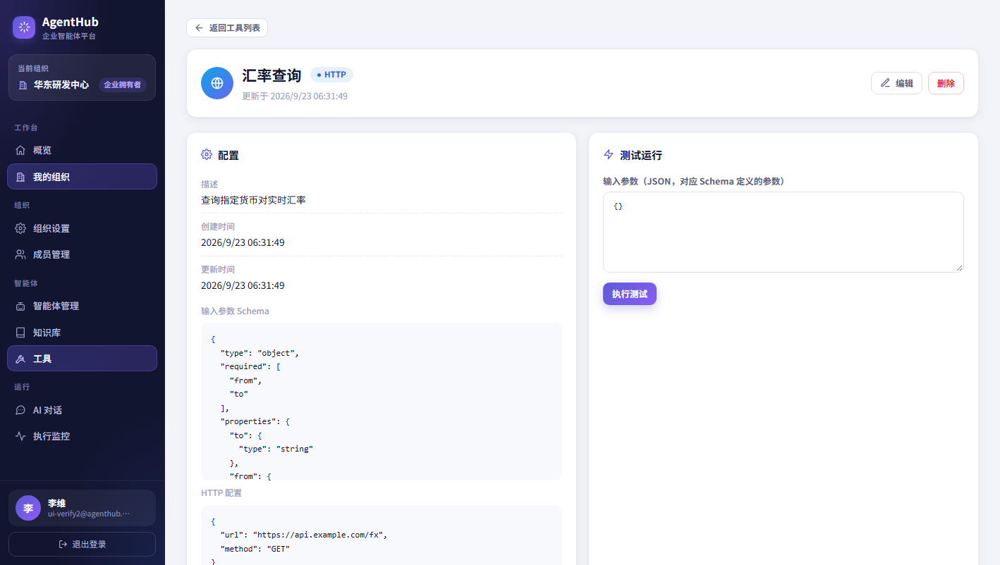
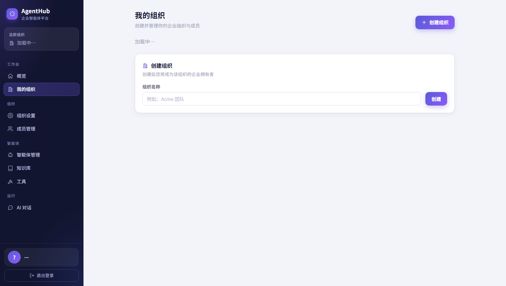

项目总体评估
基于对仓库代码（前端 15 个页面、后端 11 个 API 模块）与页面实际截图的检查，从产品视角给出定位判断、优点与差距。
定位判断
对标 Dify / Coze 空间 / RAGFlow 一类的企业级 AI Agent 平台。
- 闭环完整：用户 → Agent → 知识库 → RAG → 工具 → LLM → 执行日志，是能支撑真实业务的底子；
- 差异化优势：Agent 版本化（创建/发布/回滚）+ 执行链路全量可观测；
- 当前阶段：V1 功能验收基本达成，处于「能用」向「好用」过渡，体验细节与深度功能未跟上工程完成度。
做对了什么（值得保留）
- 工程交付质量高：一键脚本、Docker、CI/CD、pytest、模块设计文档齐全，接手成本低；
- 组织多租户 + 四角色 RBAC 严谨：owner 转让/解散有保护，角色按组织独立；
- Agent 版本化是平台级差异点，B 端管理刚需；
- SSE 流式对话 + 执行日志（LLM/RAG/Tool/Token）为可观测性打了好底子；
- 工具 Schema + 测试运行、知识库检索测试、表单实时预览等小闭环均已落地；
- 需求文档与验收标准齐全，V1/暂缓范围界定清晰。
主要差距（详见问题清单）
- 信息架构：导航归属逻辑不统一，模型供应商页面无导航入口；
- AI 对话：无停止/重试/复制、无引用来源交互、会话不可管理，核心场景体验粗糙；
- 知识库：文档生命周期缺失（无文档列表/删除/重解析/分片预览），检索测试结果不可见；
- 数据呈现：工作台只有数量卡片，执行监控无图表、无步骤时间线；
- 体验基建：加载/空/错三态粗糙，无引导；无个人中心，头像仅支持 URL。
页面盘点（15 个页面）
按页面逐项评估「完成度」与「主要问题」。完成度：高 中 低（相对该页面应有的产品形态）。
| 页面 | 用途 | 完成度 | 主要问题 / 建议 | 关联需求 |
|---|---|---|---|---|
| 登录 / 注册 | 账号入口，注册页有品牌面 | 高 | 注册与「加入组织」割裂：新用户注册后需自己建组织，无邀请码/邀请链接入口；无找回密码。 | P1-4 |
| 工作台概览 | 全局数据入口 | 中 | 仅数量卡片，无趋势/成本/活跃度；「最近执行成功率 0%」在无数据时表述生硬；快捷入口与侧边栏重复。 | P0-5 |
| 我的组织 | 组织列表与切换 | 中 | 列表信息少（成员数/创建时间/角色缺失）；多组织切换（OrgSwitcher）体验可再强化。 | P0-1 |
| 组织设置 | 基础信息 + 危险区 | 高 | 转让/解散保护到位；建议改名提示影响范围、解散增加二次输入确认（已有）。 | P0-1 |
| 成员管理 | 成员与角色分配 | 中 | 仅按邮箱添加（对方须已注册）；无邀请链路、无角色变更留痕、无成员活跃信息。 | P1-4 |
| 智能体列表 | Agent 卡片管理 | 高 | 缺分页、排序与批量操作；卡片信息维度（对话数/最近执行）可增强。 | P1-5 |
| 智能体详情 | 配置 + 版本 + 工具 | 高 | 版本历史仅列表，无版本间 diff；工具绑定入口较深；无「复制为模板」。 | P1-5 |
| 新建/编辑智能体 | 配置表单 + 实时预览 | 高 | 头像仅 URL 输入（无上传）；Prompt 无模板/变量提示；预览为静态文本。 | P0-4 |
| 新建版本 | 版本管理 | 中 | 无法与上一版本对比；发布/回滚缺少影响提示。 | P1-5 |
| AI 对话 | 核心使用场景 | 低 | 无停止生成/重新生成/复制/删除消息；无 Markdown 渲染增强；RAG 引用来源不可见不可交互；会话不可重命名/归档/搜索。 | P0-2 |
| 知识库列表 | KB 管理 | 中 | 「片段 800/100」口径不清（chunk 配置还是统计）；未展示关联的 Agent；无检索质量概览。 | P0-3 |
| 知识库详情 | 上传 + 检索测试 | 中 | 无文档列表（状态/删除/重解析）；无分片预览；检索测试不展示命中详情（内容/文档/页码/分数）；错误状态不可见。 | P0-3 |
| 模型供应商 | LLM 供应商管理 | 低 | 无导航入口（页面存在但侧边栏不可达）；无模型目录/可用性/用量统计。 | P1-3 |
| 工具列表 / 详情 | 工具配置与测试 | 中 | 类型覆盖少（当前以 HTTP/计算器为主）；无调用回放、无按角色/Agent 的授权审计。 | P1-2 |
| 执行监控 | 链路观测 | 中 | 列表无图表与筛选时间范围；详情缺步骤时间线、输入输出展开、Token 汇总、失败一键重试/定位。 | P1-1 |
结论：表单类、管理类页面完成度高；「使用类」（对话）与「深度管理类」（知识库/执行/模型）页面是主要缺口。
模块成熟度评估
八个功能维度的现状打分（5 分制）。口径：基于本次对代码与界面现状的检查，按「功能完整度 × 体验完成度」定性打分，非系统统计指标。
读图要点：认证/权限、Agent 版本、工程化三块是当前底座；知识库、对话、可观测性的「呈现层」是下一阶段主战场；界面与信息架构拖累了整体体验分。
关键问题清单
按影响程度排序。P0 为「不做就无法宣称好用」的体验闭环问题；P1 为数据与效率问题。
「组织设置 / 成员管理」挂在「我的组织」下却又是独立入口；「知识库 / 工具」挂在「智能体」下，层级逻辑不统一；模型供应商页面无任何导航入口，功能被藏在路由里。影响：用户找不到功能，平台能力被浪费。
无停止生成/重新生成/复制/删除；无 Markdown 与代码块渲染增强；需求文档承诺的「查看引用来源」在对话中不可见（RAG 命中无法展示/交互）；会话不可重命名、归档、搜索。影响：这是用户每天用的页面，直接决定留存。
上传后无文档列表，无法删除、重新解析；解析失败的原因不可见；无分片（Chunk）预览；检索测试只出 top_k 数字，不展示命中的内容/文档/页码/分数。影响：RAG 效果无法诊断，「企业文档沉淀」的价值打折扣。
多处出现裸文本「加载中…」；空状态只有一行说明；无错误重试；新用户无 onboarding。影响：第一印象像内部 demo，不像产品。
工作台只有四个数量卡片，无趋势、无 Token/成本、无活跃度；「最近执行成功率 0%」对空数据不友好；执行监控无图表、无步骤时间线。影响：管理者无法回答「用得好不好、花多少钱」。
只能按邮箱添加（对方须已注册），无邀请链接/邀请码/待接受状态；角色变更无留痕。影响：组织扩张成本高，安全审计无据可查。
当前以 HTTP/计算器为主，无内置工具库/分类浏览；对话中工具调用无回放标注；无按角色/Agent 授权与调用审计。
无个人中心（改密码/头像/会话管理）；Agent 头像仅支持 URL 输入而非上传；无「我的跨 Agent 会话」总览。
需求提案（下阶段我想做的产品内容）
以需求方身份提出。P0 = 下轮迭代必须交付（体验闭环）；P1 = 短期增强（数据与效率）；P2 = 中长期平台化。每条附验收标准，可直接进入开发排期。
P0 · 体验闭环（下轮迭代，约 3 周）
导航与信息架构重构
P0需求：统一侧边栏归属逻辑：一级导航固定为「工作台 / 我的组织 / 智能体 / 知识库 / 工具 / 运行 / 模型管理」，组织设置与成员管理收归组织详情或组织切换器内，删除重复入口；补齐「模型管理」导航项；OrgSwitcher 展示组织角色与成员数。
AI 对话体验补齐
P0需求：消息操作（复制 / 重新生成 / 停止生成 / 删除）；Markdown、代码块高亮与流式渲染；引用来源卡片——RAG 命中的文档/分片以可点击卡片展示，点击展开内容与页码，可跳转知识库文档；会话管理（重命名 / 归档 / 删除 / 搜索历史会话 / 清空上下文）；上下文长度指示。
知识库文档生命周期管理
P0需求：文档管理列表（文件名/大小/状态：解析中·成功·失败/错误原因），支持删除、重新解析；分片（Chunk）预览与数量统计；检索测试结果可视化——展示命中片段内容、所属文档、页码、分数，支持调整 top_k 与相似度阈值；KB 与已关联 Agent 的关系展示。
个人中心与体验三态
P0需求：个人中心（头像上传、修改密码、我的会话、退出全部设备）；Agent/组织头像支持本地上传；全局统一加载骨架屏、空状态插画与引导文案、错误重试按钮；新用户 onboarding（建组织 → 建 Agent → 传文档 → 发起对话四步引导）。
工作台数据升级
P0需求：工作台增加近 7/30 日趋势图（执行量、成功率、平均耗时）；Token 消耗与估算成本；最活跃 Agent / 知识库排行；「最近执行」列表可直接点击进入详情。空数据时给出引导而非「成功率 0%」。
P1 · 数据与效率（短期迭代，约 1 个月）
执行监控可视化
P1详情页升级为步骤时间线：LLM / RAG / Tool 各步骤的输入输出可展开、耗时与 Token 逐项列出；列表支持时间范围/Agent/状态筛选与 CSV 导出；失败执行可一键定位到对应对话并重试。
工具生态扩展
P1内置工具库分类浏览（计算 / 搜索 / 天气 / 数据库 / HTTP / 自定义函数）；对话中工具调用以气泡标注（如「已调用 汇率查询 · 12ms」）并可展开入参出参；工具按角色与 Agent 双重授权，调用留痕。
模型管理增强
P1模型供应商页进入导航；增加模型目录（按供应商/能力/上下文长度浏览）；每个 Agent 展示模型可用性状态；供应商用量统计（按模型/日期）；密钥加密与权限提示清晰化。
成员协作与邀请
P1邀请链接/邀请码（含有效期与角色预设），未注册邮箱可先邀请、注册后自动入组；角色变更留痕（操作者/时间/前后角色）；成员列表显示最近活跃与资源归属。
Agent 模板库与版本对比
P1行业模板（客服 / 数据分析 / 文档问答 / 工单分类）一键创建；任意 Agent 可「存为模板」；版本历史支持两版本 diff（Prompt/模型/参数高亮差异）；列表支持分页与批量停用。
P2 · 平台化（中长期，季度级）
工作流编排
P2可视化工作流画布：多步骤、条件分支、人工审核节点、并行执行；节点可复用已有 Agent/工具/知识库检索；支持导入导出工作流定义（JSON）。
多 Agent 协作与记忆
P2子 Agent / 编排 Agent（manager-worker 模式）；会话记忆与长期记忆库（按用户/组织维度沉淀可检索的事实）；记忆的开启/清空/审计由管理员控制。
自动化触发
P2定时任务与 Webhook 触发 Agent 执行（如每日 9:00 生成经营摘要推送）；触发记录并入执行日志；失败重试策略可配置。
API Keys、配额与审计
P2组织级 API Key 管理与按 Key 配额/限流；全量审计日志（登录/资源变更/工具调用/权限变更）；为商业化（套餐/计费）预留数据底座。
国际化与移动端
P2i18n（中/英优先，文案抽离）；移动端 H5 适配（对话与监控优先）；无障碍与深色模式。
迭代路线图
建议的开发节奏：先补体验闭环（P0），再上数据与效率（P1），平台化能力（P2）按季度滚动。
2026-10
V1.5 · 体验补全
导航重构、对话体验补齐、知识库文档生命周期、个人中心与三态、工作台数据升级。目标：从「能跑通」到「好用」，核心闭环无体验死角。
2026-11 ~ 12
V1.6 · 数据与效率
执行监控可视化、工具生态、成员邀请、模型管理、模板库与版本对比。目标：让管理者看得清、让用户建得快、让团队扩得动。
2027 Q1 起
V2.0 · 平台化
工作流编排、多 Agent 协作、Agent 记忆、自动化触发、API Keys 与配额、审计与数据看板、国际化。目标：从「工具」成为「平台」，支撑商业化。
下轮迭代验收标准
P0 需求全部交付后，需求方将按下述清单逐项验收，全部通过才视为迭代完成。
- 导航：全站无重复入口、无死链；模型管理可从导航直达；任何页面 ≤ 3 次点击可达；
- 对话：可停止、可重新生成、可复制；命中知识库的回答带可展开的引用来源；会话可重命名/归档/搜索；
- 知识库：文档全状态可见可操作；检索测试返回内容/文档/页码/分数；删除文档同步清理向量；
- 账户与三态：头像可上传；全站无裸「加载中…」；每个空状态有下一步动作；新用户有四步引导；
- 工作台：7/30 日趋势图可用；成本口径可解释；空数据态表达正确；
- 回归：既有 pytest 全部通过；新增用例覆盖对话引用、文档生命周期、导航权限；
- 体验：桌面与移动端（H5 适配范围）均无布局破损；关键操作响应 ≤ 300ms（本地环境）。
附录 · 页面证据截图
以下截图来自 frontend/shots/，为本次评估依据的一部分；点击可在仓库中查看原图（相对路径，需与仓库一同保留）。







